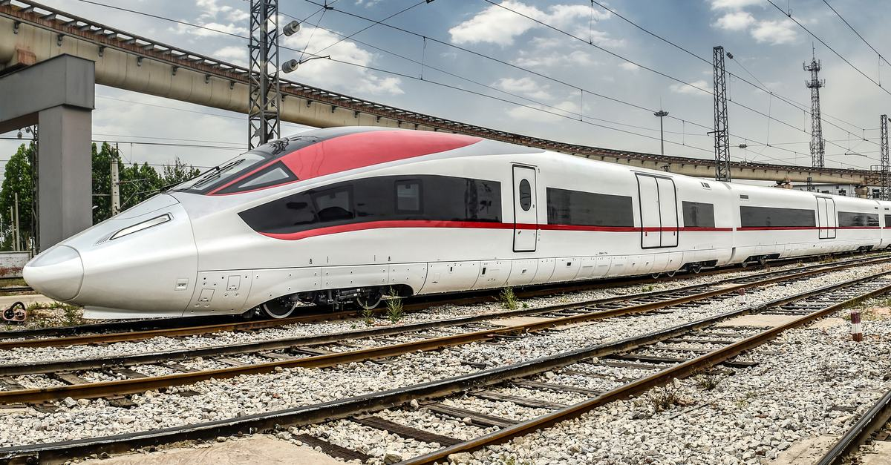

2018年10月09日，国务院办公厅印发了《推进运输结构调整近三年行动计划（2018—2020年）》，以推进大宗货物运输“公转铁、公转水”为主攻方向。2019年9月，中共中央、国务院印发了《交通强国建设纲要》，并发出通知，要求各地区各部门结合实际认真贯彻落实。《交通强国建设纲要》中关于交通装备先进适用、完备可控中明确指出要实现时速250公里级高速轮轨货运列车重大突破的要求。2020年9月9日，习总书记主持召开中央财经委员会第八次会议上强调：要建设现代综合运输体系，形成统一开放的交通运输市场，优化完善综合运输通道布局，加强高铁货运和国际航空货运能力建设，加快形成内外联通、安全高效的物流网络。
中车唐山机车车辆有限公司(以下简称中车唐山公司)作为国内轨道车辆主要研发制造单位,产品涵盖了动车组、城轨/地铁、大铁路等全谱系化产品系列。新型高铁快运动车组是公司独立开发的原创性产品并依托国家科技部“十三五”重点研发计划先进轨道交通专项课题实施。中车唐山公司为课题承担单位，投入院士2名，中车科学家3名，中车资深专家6名，中车专家16人等，约500多人的课题研究开发团队。
新型高铁快运动车组是全球第一列下线的时速350公里货运动车组，开拓了货物运输的新模式，为我国建立基于轨道列车的安全高效商贸流通体系奠定了基础，并在高速列车数字化制造方面提供了工程实践案例，依托高铁快运动车组产品产业链的体系，形成了设计、制造、运维/检修一体化平台。动车组的设计将工程美学与新材料、智能化、模块化的技术相结合，满足快捷货物容积大、载重高、速度快的运输特点，运行安全可靠，实现公、铁、航一体化运输需求，并形成相关标准体系。
高铁快运动车组载重≥110t、容积≥800 m³，采用货物识别及精准定位技术，提供一种智能化安全保障的运输管理方案，实现快捷运输的全链条在途管理。受理授权发明专利15项。
预计高铁快递在2025年达到80亿件，干线收入480亿，在2030年达到145亿件，干线收入840亿。新型高铁快运动车组的开行将改变中国物流运输业多式联运的格局，同时作为最绿色的运输方式，有效降低社会成本及物流成本。提高冷链物流时效性，拉动周边产业发展，创造新的产业发展极，促进区域之间交流，推动国民经济的持续快速发展。
交通强国建设纲要中明确指出，打造绿色高效的现代物流系统。优化运输结构，加快推进港口集疏运铁路、物流园区及大型工矿企业铁路专用线等“公转铁”重点项目建设，推进大宗货物及中长距离货物运输向铁路和水运有序转移。推动铁水、公铁、公水、空陆等联运发展，推广跨方式快速换装转运标准化设施设备，形成统一的多式联运标准和规则。发挥公路货运“门到门”优势。完善航空物流网络，提升航空货运效率。推进电商物流、冷链物流、大件运输、危险品物流等专业化物流发展，促进城际干线运输和城市末端配送有机衔接，鼓励发展集约化配送模式。综合利用多种资源，完善农村配送网络，促进城乡双向流通。落实减税降费政策，优化物流组织模式，提高物流效率，降低物流成本。
采用以产、学、研、用相结合模式，开展协同技术创新，联合前端技术研究，后端应用平台，以创新带动产业发展，打通上下游企业，打造时速350公里新型高速轮轨货运列车技术与全链条物流运输产业体系，初步构建了安全高效商贸流通体系。
以《中国制造2025》为行动纲领，依托工信部智能制造专项“高速车车体制造新模式”，建立数字化研发工艺设计系统平台、制造过程管理系统（MES）、数据采集与分析系统等信息系统和智能化硬件设备，实现产品研发、工艺、仿真验证的数字化，制造过程、信息采集、物料配送、质量管控的智能化。 对于制造商而言，依托数字化制造实施，强化制造过程中技术和管理数据及流程的标准化，贯通制造过程中技术、生产、人员、资源、供应链、安全环境和质量管理标准化数据，完善工业实时数据获取和归集能力，开发基于不同机理的算法模型，构建制造系统的数字孪生，提升物理产线与数字产线的交互验证水平，进而不断提升企业的质量、效益和效率。
高铁货运产品产业链的体系建设，带动一体化运输服务新模式，完全实现“门到门”、解决最后“一公里”的快捷运输瓶颈；高铁货运的网络、速度、成本、全天候运行的优势，将会对当前国内快递和货运的发展格局产生重大影响。相对于航空运输费用高、汽车运输效率慢，时速350公里新型高铁快运动车组以安全、经济、可靠、高效的优质服务，将是未来快捷货物运输的不二首选。 对载运工具、装卸固定等器械的创新设计，逐步建立以铁路为骨干的综合运输运修一体化服务新模式。搭建健康管理系统，保障货运动车组及时、高效、智能的维修，提升运维保障综合能力；搭建三、四、五级修体系，具备整车高级修和部分部件自主修能力，形成覆盖高速动车组、普通客车等产品的专业化售后服务队伍，同时建立了完善的售后服务网络。
研究新型高铁快运动车组承载系、走行系、货物便捷定位、重心自适应控制、快速装卸等关键技术，沉淀编制相关技术标准，并推广实施，制定行业标准1项目，中车标准2项。通过完善平台构建、技术标准的建立、作业流程和工作细则规范等可确保快捷货运作业安全、迅速、高效进行。
新型高铁快运动车组的工业设计从顶层设计出发，将艺术设计与工程美学相结合，并充分考虑人机工程学、空气动力学等因素，外观造型简洁鲜明，内部装饰结合人员工作和货物装载的需求，实现了结构的标准化、模块化，性能安全、舒适、可靠。动车组的设计为工业创意设计到工业化批量生产的完美结合提供了范例。
动车组的流线型车头采用大长细比设计，满足高速运行减阻降噪需求。头型设计利用仿生学设计原理，提取中华鲟作为设计元素，让设计充满动感。
中华鲟是我国特有物种，即使有些被移居海外，也要千里寻根，洄游到故乡的江河里生儿育女。在洄游途中，它们表现了惊人的耐饥、耐劳、识途和辨别方向的能力。以中华鲟骨骼线型为特征的车头方案体现出流畅简洁的速度感，其特有能力映射出高铁快运动车组功能特征。车头棱线分明而圆润，兼备时代感、科技感。外观色彩简洁鲜明，亲和，体现速度、现代与自然和谐,在实验中体现了良好的空气动力学性能，司机视野宽阔。
动车组大量采用铝镁等轻金属材料以及碳纤维等复合材料，特别是为了避免动车组货仓区发生火灾时，车辆停于受限空间，货仓区使用结构防火，采用新型膨胀型防火涂层，当发生火灾时，车体型材上防火涂料受热膨胀，会挤压碳纤维棉，形成碳化层，能够保护车体仍具有一定的完整性。在车辆正常运行的情况和线路规定的运行环境条件下，确保正常维护保养，其防火层使用寿命可以达到10年，寿命期内不会出现脱落且防火功能符合设计相关要求。
基于精确称重和遗传算法，实现集装器与车辆负载的科学分配。
通过大数据分析，利用云端虚拟配载技术，实现快运货物的智能配载。
采用无载波脉冲通信（UWB），具有货物精准识别、精确定位功能，通过5G网络及北斗卫星导航系统实现货物信息车地交互。
基于货仓温度、湿度、有毒有害气体等多种环境，进行封闭货仓安全状态评估并构建车辆与地面传输子系统，实现货物运输全过程安全检测。
多品种集装器具研制开发，实现动车组内部轮廓断面利用率最大化，形成了全系列标准集装器以及具备保鲜、冷藏功能的集装器。
在既有高铁站台作业时，可考虑采用地牛或手持有线地面辅助移动设备进行货物装卸，该装卸设施可满足在较大客运站中间停靠时进行快速作业要求。
创新性/先进性技术特点总结如下：
